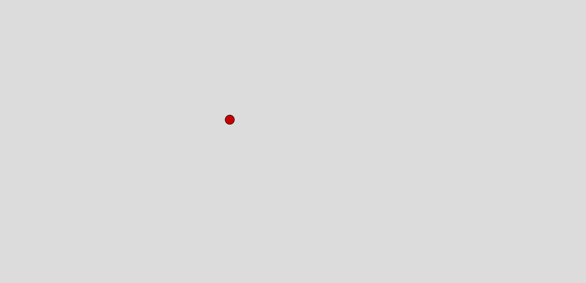

Heavily inspired by Synchronicity from my Research Journal, I set out to create the beauty of waveforms through an interactive ocean wave generator with audio. At first I struggled with writing a cos wave function with a visually pleasing amplitude, speed and wavelength, which took numerous trials and errors to get a working function. Next as mentioned in my research, where I plan to combine basic techniques to generate complex geometry, I implemented audio-responsive controls, where the user can control the amplitude of waves with their volume. This I found significantly increase the user's engagement as they created different array and shapes of waves. Some Early iterations with different wavelength, amplitude and styles:
I experimented with the wave fading away to create a more mystical feeling. However, I ultimately decided to keep previous waves to create layers of waves, generating the illusion of 3 dimensional. Later inspired by the game Monumnent Valley's simple and calming aesthetic, I decided to keep the original black and white scheme, but assinging the background to dark instead, while removing outlines on the circles, which made the waveforms appear smoother and calming. Final Iterations:
Inspired by Mario Galaxy, I aim to create a gravity-based game where the user can similarly control the direction of gravity and accelerate the ball around the window screen. My biggest challenge was emulating a physics system. First, I tried creating a ball that bounces on the ground. Afterward, I experimented with controlling the acceleration using my mouse position and successfully created the first iteration of the gravity game.
Though the basic mechanism is finished, I still want to implement a concept similar to Conway's Game of Life, where the algorithm evolves over time. Later, I added the ability for users to spawn more balls with a click, which soon turned the entire window into chaos. This function took the most time to figure out, as I had to understand arrays to make new balls that follow the gravitational forces. I also added a title screen and bouncing sounds, which significantly enhanced the arcade feeling.
Inspired by The Story of the Moving Image exhibited at the ACMI, where you are filtered into a stylized stick figue, I also set out to recreate something similar. Incorporating different mechanics I learnt from Week04-Week06, I plan to make a screenshot button, which immediately start generating circles to illustrate the screenshot.
One interesting consequence of this function is that, if I spam click the screenshot button, I can randomly overlap several images together, creating a dynamic and interesting pattern.